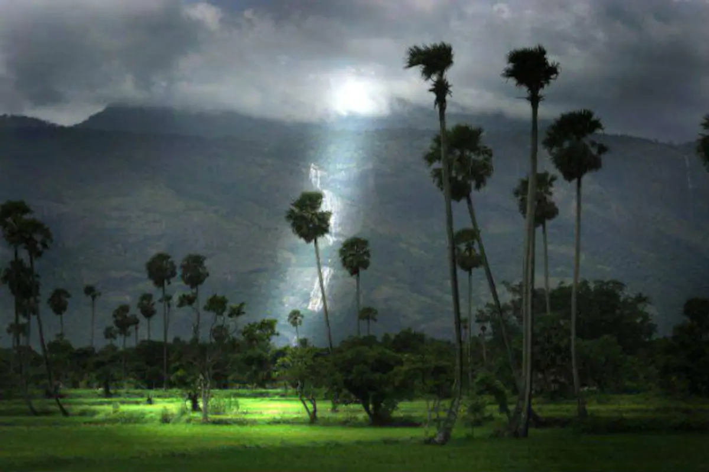
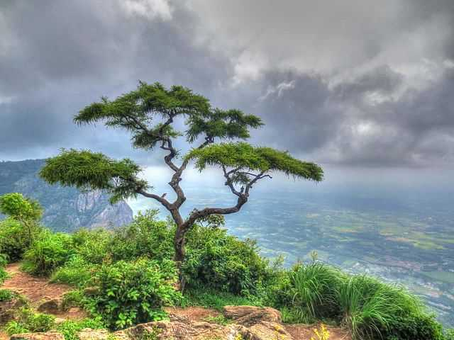
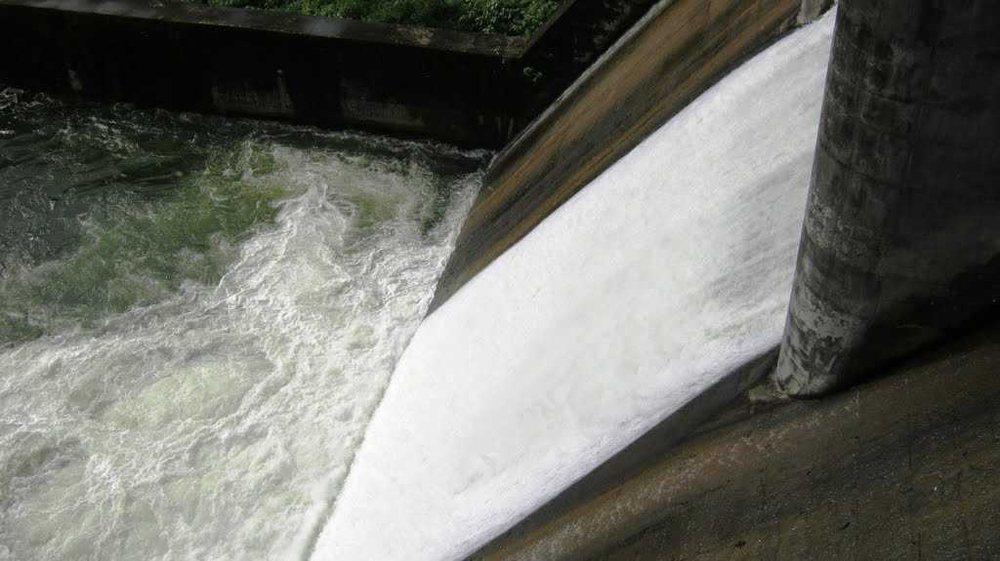
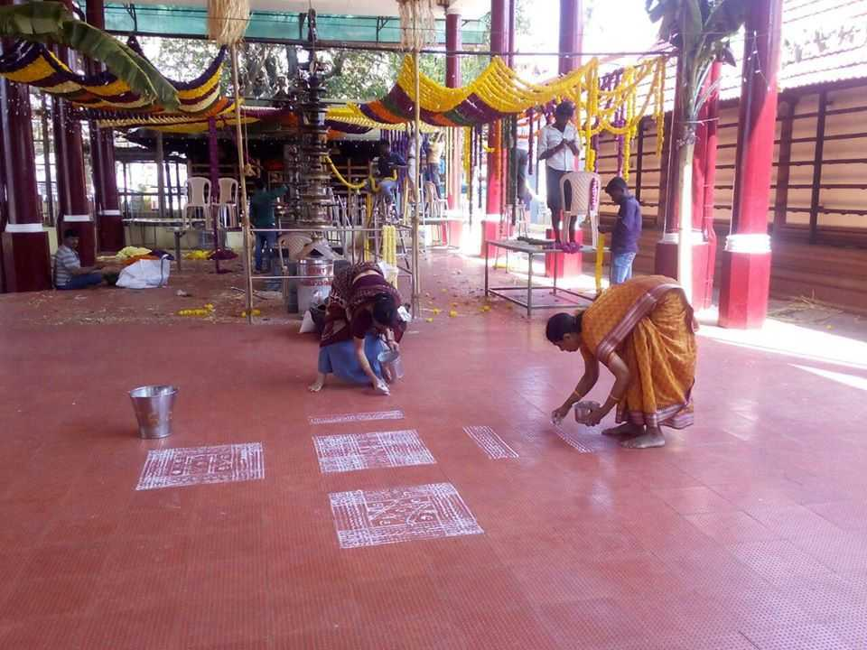
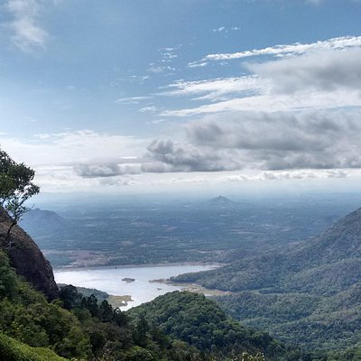
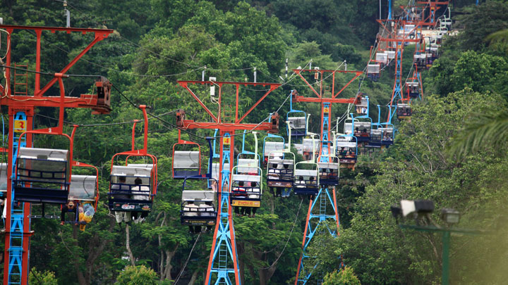

The Granary of Kerala
Palakkad, or Palghat, is a city in Kerala, a state in southwestern India. The 18th-century Palakkad Fort has sturdy battlements, a moat and a Hanuman temple on its grounds. North, on the Kalpathy River, the 15th-century Viswanatha Swamy Temple is the main venue of the famous Ratholsavam chariot festival.
Top Destinations

Seethargundu view point
Seethargundu Viewpoint is a famous point in the region. It is located on a cliff and offers a stunning view of the surroundings making it a perfect attraction for nature lovers and photographers.

Kanjirapuzha
Nursing a beautiful dam, Kanjirapuzha at 38 km from Palakkad, is surrounded by an evergreen forest of Vettilachola. The fisheries department runs a nursery near the dam which is quite popular among tourists.

Mangalam Dam
Mangalam Dam has been built on a tributary of River Mangalam and River Cherukunnapuzha for meeting the irrigation requirements in the region. The dam is a marvellous sight amidst dense forests.

Palakkad Fort
The Palakkad Fort in Kerala is a beautiful historical monument that has gently integrated its high walls with its surrounding green gardens. One of the most well-preserved forts in the state of Kerala, the Palakkad fort was built in the 1766 AD by Hyder Ali and is now a protected monument under the Archaeological Survey of India.

Ottappalam
Situated on the banks of the Bharathapuzha River, or Nila, Ottapalam is a scenic town in Pallakad, also known as the 'land of palm trees'. Ottapalam claims a rich cultural heritage and has hosted quite a few historic events.

Vadakkanthra Temple
Dedicated to Goddess Karnaki, who finds mention in the Tamil epic Silapathikaram as a vengeful wife and a legendary woman, the Vadakkanthara Thirupuraikkal Bhagavathy Temple is the only temple in Kerala that celebrates the goddess in her complete idolic form.

The Silent Valley National Park
The Silent Valley National Park, with its lush green forests and beautiful views of the rich flora, is a popular destination for nature and wildlife lovers in Kerala. With its long, detailed history and the unique status of a Rain Forest, this national park is truly a sight to visit.

Parambikkulam Wildlife Sanctuary
Blooming with in rare varieties of medicinal plants, orchids and fauna, the Parambikkulam Wildlife Sanctuary is hailed to be one of the best wildlife sanctuaries in South India.

Nelliyampathy
Nelliyampathy is a hill station within the Nelliyampathy Forest Reserve, in the southwest Indian state of Kerala. The road to it, which goes through the dense forests of the Western Ghats, is known for its many hairpin turns.

Malambuzha Dam
Malampuzha Garden in Palakkad district is the only rock-cut garden in South India made by Nek Chand, the renowned artist and winner of the prestigious Padmashree Award. The entire garden is made from broken pieces of bangles, tiles, used plastic cans, tins and other waste materials. Also situated in the gardens is the massive Malampuzha Yakshi (female vampire) built in 1969 by Kanayi Kunhiraman, a greatly respected sculptor from the state.